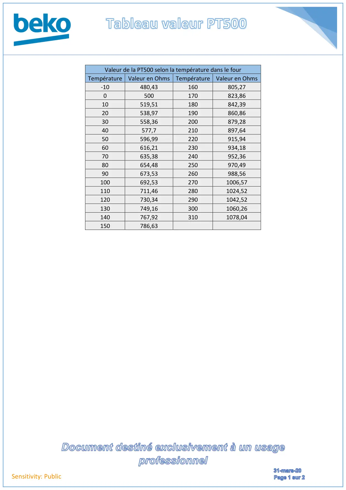
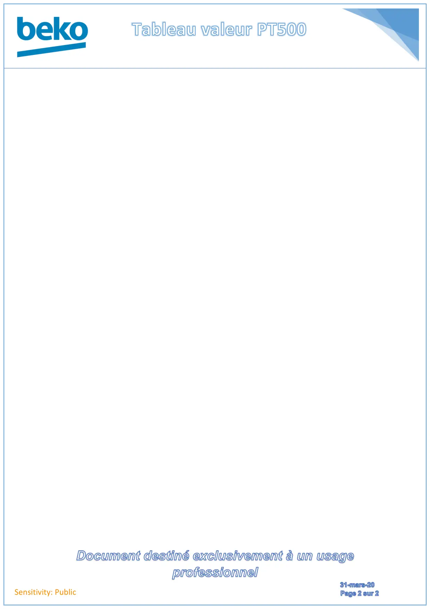

Tableau Valeur PT500

Sensitivity: PublicValeur de la PT500 selon la température dans le fourTempérature Valeur en Ohms Température Valeur en Ohms-10480,43160805,270500170823,8610519,51180842,3920538,97190860,8630558,36200879,2840577,7210897,6450596,99220915,9460616,21230934,1870635,38240952,3680654,48250970,4990673,53260988,56100692,532701006,57110711,462801024,52120730,342901042,52130749,163001060,26140767,923101078,04150786,63
1 / 2
Sensitivity: Public
2 / 2